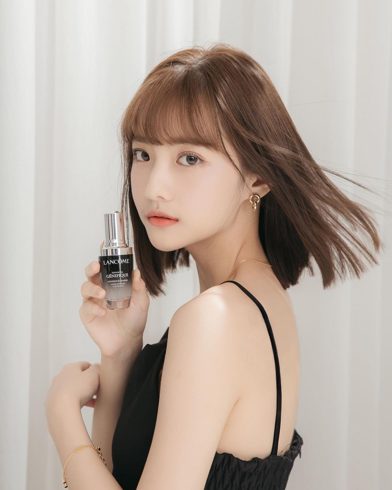
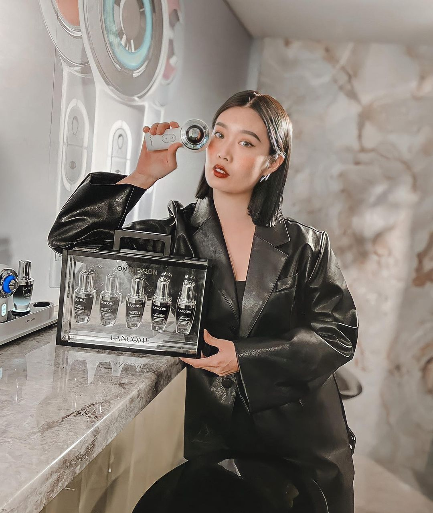
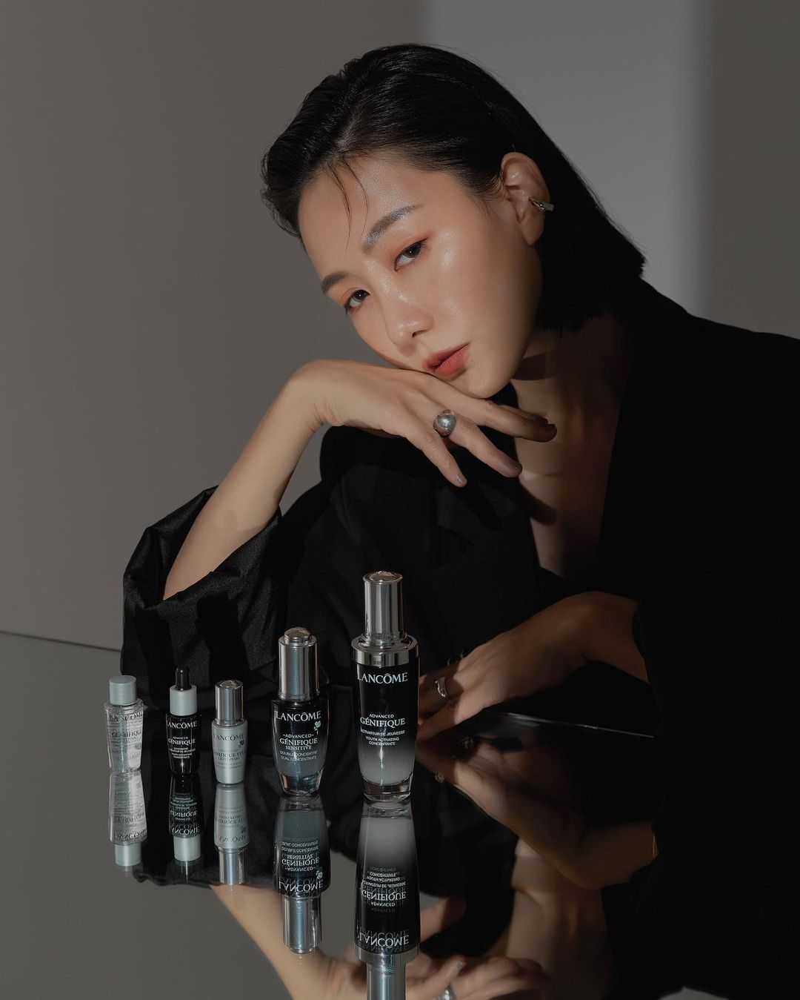
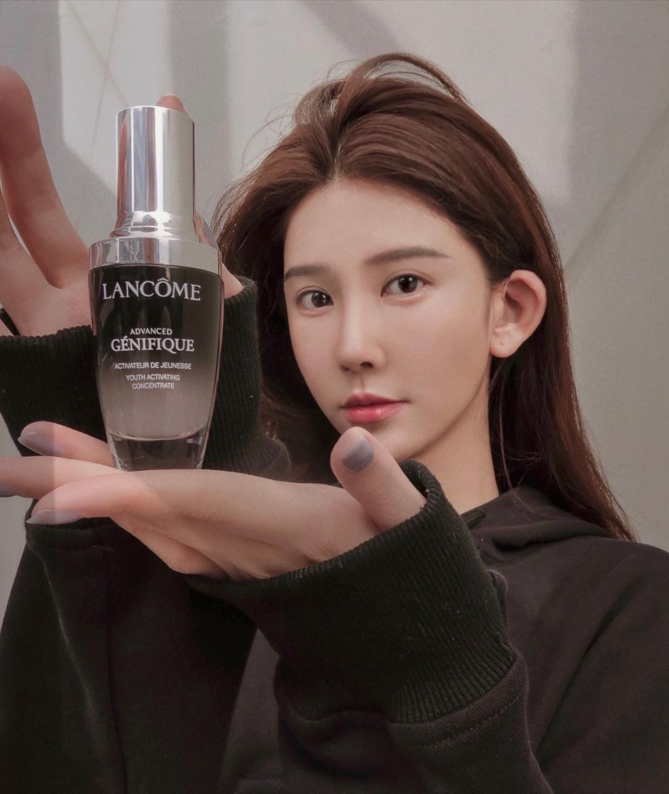
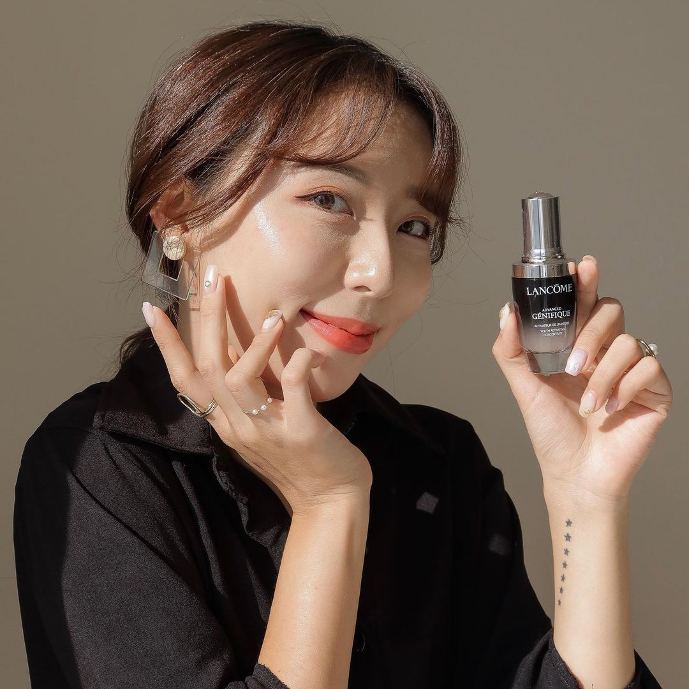
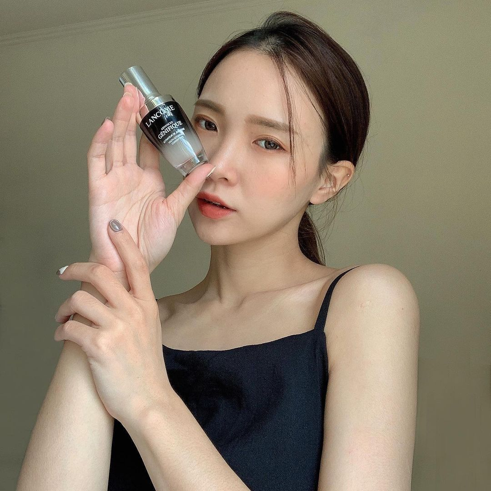
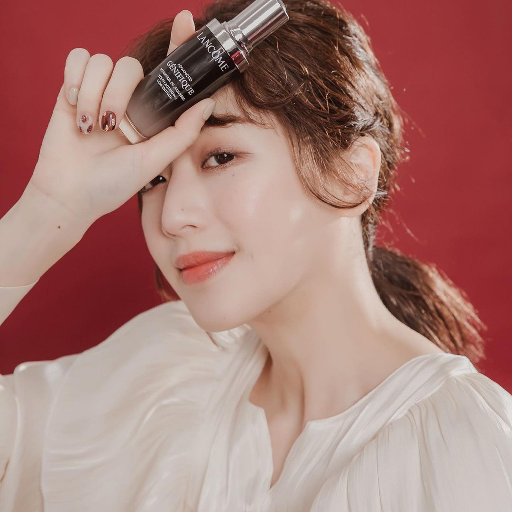

#各大網美愛用品

Nina /
「前陣子因為肌膚狀況有點過敏，用這瓶也沒問題！」

Melanie /
「上妝後毛孔緊緻好平滑超貼妝！」

Lila大力 /
「每次間斷使用其他保養品後隔了一陣子再用回小黑瓶一直都還能感受得到使用後肌膚能更更更更嫩更Q彈的感覺」

Rounian /
「每次換季我鼻翼周邊就會有點泛紅，實測7天後鼻翼的泛紅都淡了」

倫倫 룬룬 /
「右臉使用小黑瓶變得很Q嫩、很透亮！會發光✨
最近的痘痘肌膚況也穩定超多
左臉無使用顆粒感和痘痘肌超猖狂！
尤其是髮際邊的皮膚真的落差巨大(⸝⸝⸝ᵒ̴̶̷̥́ ⌑ ᵒ̴̶̷̣̥̀⸝⸝⸝)」

飛飛 /
「小黑瓶的質地也是我最喜歡它的原因之一，非常輕盈也很保濕，吸收的也很快～化妝水後就可以使用，我也會另外加進粉底液中，讓底妝更服貼持久！」

卡特 /
「我是混合肌，偶爾會泛紅敏感，
我自己也會用在妝前保濕讓肌膚更水嫩，
在保養時我也會搭配按摩拉提讓緊緻度提升～
而且質地比起油膩的油類更清爽也更好吸收喔！」

Clina 逸歡 /
「最常跟大家介紹的小黑瓶，他真的是我每天保養必備的一罐精華，質地輕盈不黏膩好吸收，長期下來彈潤光滑有光澤的功勞不可少」